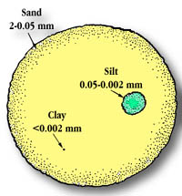

|
|
|
| Soil is composed of solid particles (minerals and organic matter)
and pore space (air and water).
The characteristics of the soil are determined by the size,
distribution and shape of the solid particles in addition to the size and
number of pore spaces.
Texture of soil refers to the size of mineral particles, ranging in size
range from fine to coarse. There are three categories of sizes: clays, silt and sand.
The proportion of sand, silt and clay particles in the soil determines whether a soil is
classified as sandy, silty or clayey. A balanced soil (loam) contains about 40% sand,
40% silt and 20% clay and is preferred for growing crops. Other soil textural classes include:
|
|||
 Sandy particles are the only particles which may be large enough to be seen with the naked eye. Predominantly sandy soil has a gritty feel (coarse-textured) when rubbed between the fingers. Silt particles are smaller than sand particles. Predominantly silty soils feel powdery (like flour) and do not hold together well when wet, though they are more cohesive than sandy soils.
Clayey soil has the smallest soil particles, and many small pore spaces. Soils with a high number of clay particles have a very high water holding capacity and are very fine-textured, making them feel smooth and sticky (like soap) when wet. |
To emphasize further the relative sizes of sand, silt and clay particles, imagine you are holding a clay particle the size of a grain of salt in your hand. A silt particle next to it would then be the size of a candy. A sand particle would be the size of a stove! (The ratio is about 1:26:1025)